관리자 로그인

관리자 전용 로그인 화면입니다. 관리자 계정으로만 로그인할 수 있으며, 응시자용 회원 계정(일반 가입·Google 가입)으로는 이 화면에 들어갈 수 없습니다. 계정은 최고관리자가 발급합니다.
진행 순서
- 관리자에게 받은 이메일과 초기 비밀번호를 입력합니다.
- 필요하면 로그인 유지를 체크합니다(공용 PC에서는 체크하지 않는 것을 권장합니다).
- 로그인을 누르면 관리 화면으로 이동합니다.
- 첫 로그인이거나 비밀번호 변경이 필요하면, 다른 메뉴를 쓰기 전에 새 비밀번호를 설정해야 합니다.
| 번호 | 요소 | 설명 |
|---|---|---|
| 1 | 이메일 | 관리자 이메일(로그인 ID). 비어 있으면 「입력 누락」 안내가 표시됩니다. |
| 2 | 비밀번호 | 비밀번호 입력란입니다. 눈 모양 아이콘으로 표시/숨기기를 전환할 수 있습니다. |
| 3 | 로그인 유지 | 체크하면 브라우저를 닫아도 로그인이 유지됩니다. 미체크 시 탭을 닫으면 다시 로그인해야 합니다. |
| 4 | 로그인 버튼 | 이메일·비밀번호를 입력한 뒤 로그인 → 관리 화면으로 이동합니다. |
| 5 | 오류 안내 | 로그인 실패 시 원인별 메시지가 표시됩니다. 이메일·비밀번호 불일치, 5회 연속 실패 시 30분 잠금, 관리자 계정이 아님, 서버 연결 실패 등. |
| 6 | 변경 완료 안내 | 비밀번호를 변경한 뒤 다시 로그인할 때 「비밀번호 변경 완료 · 새 비밀번호로 다시 로그인」 안내가 보입니다. |
| 7 | 비밀번호 찾기 | 비밀번호를 잊었을 때는 최고관리자에게 초기화를 요청합니다. 응시자용 「비밀번호 찾기」와는 별도입니다. |
TIP: 로그인이 5회 연속 실패하면 30분간 잠깁니다. 비밀번호를 확실히 모를 때는 잠금되기 전에 최고관리자에게 초기화를 요청하세요. 이미 로그인된 상태에서 이 주소로 들어오면 바로 관리 화면으로 이동합니다.
관리자 기본 화면
로그인 후 보이는 관리 화면의 뼈대입니다. 왼쪽 메뉴에서 업무 화면으로 이동하고, 상단에서 회차와 로그인 사용자 정보를 확인합니다.

이 화면에서 할 수 있는 일
- 왼쪽 메뉴 — 대시보드, 접수자, 회차·시험장, 공지·FAQ, 환불·문의, 회원·약관, 관리자·권한·이력·접근 로그 등 16개 메뉴 이동
- 회차 선택 — 지금 처리할 시험 회차 선택(접수·대시보드 숫자가 이 회차 기준)
- 응시자 사이트 — 응시자가 보는 화면을 새 창에서 확인(공지·접수 화면 점검용)
- 로그아웃 — 업무 종료 시 반드시 로그아웃(특히 공용 PC)
| 번호 | 요소 | 설명 |
|---|---|---|
| 1 | 왼쪽 메뉴 | 메인·접수·시험 운영·콘텐츠·회원·약관·시스템 그룹으로 나뉜 16개 메뉴입니다. 일부 메뉴 옆 숫자 배지가 표시됩니다. |
| 2 | 회차 선택 | 상단에서 작업할 회차를 선택합니다. 옵션에 진행중 / 예정 / 종료 상태가 함께 표시됩니다. |
| 3 | 알림 숫자(배지) | 메뉴마다 집계 기준이 다릅니다. 접수자 목록 = 선택 회차의 미수납 건수(취소·반려·환불자 제외). 환불·정보정정 = 접수·검토중 신청. 문의 게시판 = 답변 대기. 0건이면 배지가 보이지 않습니다. |
| 4 | 상단 바 | 현재 위치·화면 제목·회차 선택·응시자 사이트 새 창 링크·로그인 사용자(이름·등급)가 표시됩니다. |
| 5 | 사용자/로그아웃 | 이름·역할(최고/일반/조회)이 표시됩니다. 로그아웃 → 확인 후 로그인 화면으로 이동합니다. |
데이터를 불러오는 동안 상단에 진행 안내가 잠시 표시됩니다. 오류가 나면 빨간 안내 띠가 나타나니, 메시지를 확인한 뒤 다시 시도하거나 네트워크 상태를 점검해 주세요.
첫 로그인·비밀번호 변경이 필요한 경우, 다른 메뉴를 사용하기 전에 새 비밀번호(8자 이상, 영문·숫자·특수문자 포함, 현재 비밀번호와 달라야 함)를 설정해야 합니다.
TIP: 접수 업무 전에 상단 회차 선택이 올바른지 꼭 확인하세요. 다른 회차를 선택한 채 수납·승인을 하면 혼선이 생길 수 있습니다.
대시보드

선택한 회차의 접수 현황을 숫자로 한눈에 보여 주는 화면입니다. 회차를 바꾸면 모든 KPI가 다시 계산됩니다. 아침 업무 시작 시 「오늘 처리할 건이 얼마나 있는지」 파악하는 데 유용합니다.
KPI 읽는 방법
| 번호 | KPI 카드 | 의미 (선택한 회차 기준) | 활용 팁 |
|---|---|---|---|
| 1 | 전체 접수자 | 현재 회차 접수 건수(취소 포함 전체) | 회차 규모·접수 추이 파악 |
| 2 | 접수완료 | 온라인 접수는 끝났으나 사진·수납·승인 처리가 남은 건 | 사진 심사·수납 대기 포함 |
| 3 | 수납대기 | 사진 승인 후 오프라인 수납 전 건 | 현장 수납 확인 후 오프라인 수납 처리 |
| 4 | 승인완료 | 승인 처리 완료(또는 수험번호 부여 완료) 건 | 최종 확정·수험번호 부여 대상 확인 |
| 5 | 반려 | 접수 또는 사진 반려 건 | 재접수 대기·사유 확인 필요 |
TIP: 「수납대기」 숫자가 많으면 접수자 목록 → 상태 수납대기 필터로 들어가 순차 처리하세요. 「접수완료」가 많으면 사진 심사가 밀린 상태일 수 있습니다.
접수자 목록
접수자 심사·수납·승인·수험번호 부여의 핵심 업무 화면입니다. 하루 대부분의 시간을 이 화면에서 보내게 됩니다.

4-1. 목록 화면 (스크린샷 번호)
스크린샷 ● 번호는 1~4이며, 급수 필터는 2번(시험장·급수) 에 포함됩니다.
| 번호 | 요소 | 설명 |
|---|---|---|
| 1 | 상태 필터 | 전체 / 접수완료 / 사진심사중 / 수납대기 / 승인완료 / 반려 / 취소 / 환불. 각 칩에 건수가 표시되어, 어디부터 처리할지 판단하기 쉽습니다. |
| 2 | 시험장·급수 | 시험장(활성 시험장만)과 급수(Ⅰ / Ⅱ / 동시)로 목록을 좁힙니다. 현장·급수별로 묶어 처리할 때 사용합니다. |
| 3 | 검색 | 한글·영문 이름, 이메일, 생년월일, 수험번호 일부만 입력해도 검색됩니다. 응시자가 전화·이메일로 문의할 때 빠르게 찾을 수 있습니다. |
| 4 | 접수자 표 | 체크박스, 이름, 사진, 사진심사·수납·상태, 수험번호, 상세보기 버튼. 한 페이지에 12행씩 표시됩니다. 상세보기로 한 건씩 자세히 처리할 수 있습니다. |
4-2. 일괄 처리
여러 건을 한꺼번에 처리할 때 사용합니다. 표 왼쪽 체크박스로 1건 이상 선택하면 화면 하단에 고정 바가 나타납니다.
| 버튼 | 대상·조건 | 결과 | 참고 |
|---|---|---|---|
| 사진 일괄 승인 | 선택 건 중 아직 사진 승인 안 된 건 | 처리 건수 안내 | 규격 OK인 사진만 선택해 주세요 |
| 오프라인 수납 | 수납 권한 보유, 사진 승인 완료 건 | 수납 확인 창 열림 | 현장 수납·영수증 확인 후 처리 |
| 승인 | 승인 권한 보유 | 승인 확인 창 | 사진 미심사 또는 미수납 건이 포함되면 승인 불가 |
| 반려 | 반려 권한 보유 | 반려 확인 창 | 반려 사유 필수, 응시자에게 안내 발송 |
| 수납 취소(환불) | 수납 완료 건만 | 수납 취소 확인 창 | 환불 업무와 연계 |
TIP: 처음에는 상세보기로 1건씩 처리해 보고, 익숙해지면 같은 상태·같은 시험장 건을 묶어 일괄 처리하세요.
4-3. 상세·처리 확인 창
상세보기·일괄 처리·수험번호 일괄 부여 등으로 열리는 우측 슬라이드 패널(LP) 또는 가운데 확인 모달입니다. 별도 「사진 심사」 메뉴는 없으며, 사진 심사는 접수자 상세 패널 안에서 처리합니다.
접수자 상세 (사진 심사 포함)
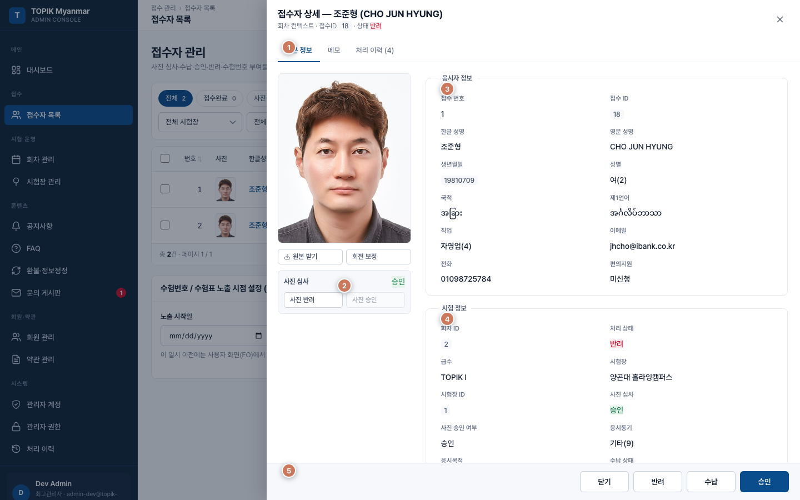
| 번호 | 요소 | 설명 |
|---|---|---|
| 1 | 탭 | 기본 정보 / 메모 / 처리 이력 (N). 메모는 담당자끼리 공유하는 용도입니다. 처리 이력 탭의 숫자(N)는 이 접수 건에 대한 관리자 처리 건수만 표시합니다(전체 처리 이력 메뉴와 별개). |
| 2 | 사진 심사 | 왼쪽 증명사진 확대·회전·원본 받기 + 사진 승인/반려. 반려 시 사유 선택(기타는 상세 입력). 별도 사진 심사 창 없이 여기서 처리합니다. |
| 3 | 응시자 정보 | 이름·연락처·이메일·가입 정보·접수 시 입력한 직업·동기 등. |
| 4 | 시험 정보 | 회차·급수·시험장·현재 상태·접수번호·수험번호·수납 상태 등. |
| 5 | 하단 버튼 | 반려·수납·수납취소·승인 — 권한과 접수 상태에 따라 활성/비활성. 승인은 사진 승인 + 수납 완료 후에만 누를 수 있습니다. 회색이면 이전 단계(사진·수납)가 남았거나 권한이 없는 경우입니다. |
오프라인 수납
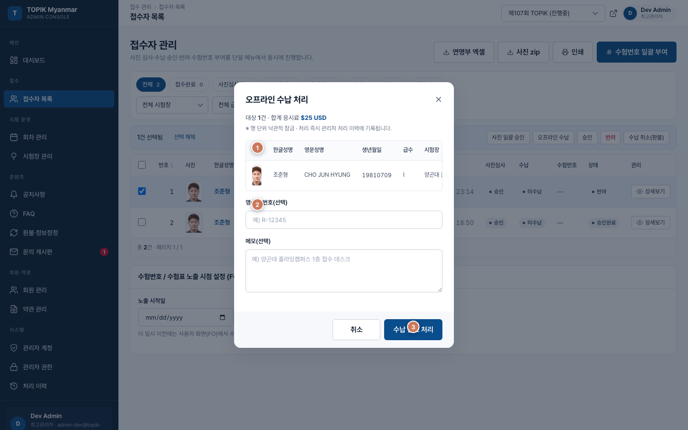
| 번호 | 요소 | 설명 |
|---|---|---|
| 1 | 대상 목록 | 선택한 접수자와 합계 응시료가 표시됩니다. Ⅰ·Ⅱ 동시 접수 시 급수별로 각각 수납해야 합니다. |
| 2 | 영수증·메모 | 현장에서 받은 영수증 번호·메모(선택)를 입력합니다. 나중에 감사·환불 확인에 도움이 됩니다. |
| 3 | 수납 완료 | 내용 확인 후 수납 완료 → 해당 건이 수납 완료 상태로 바뀝니다. |
승인 확인
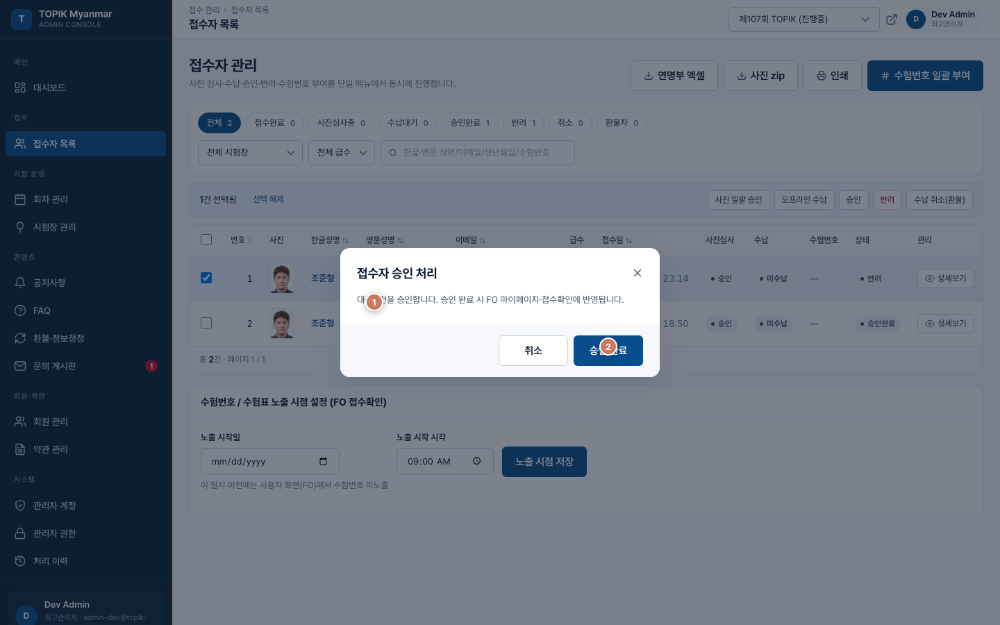
| 번호 | 요소 | 설명 |
|---|---|---|
| 1 | 승인 대상 안내 | 승인할 건수와 주의사항. 사진 미심사 또는 미수납 건이 포함되면 승인할 수 없으며, 해당 응시자 목록이 안내에 표시됩니다. |
| 2 | 승인 실행 | 사진 승인·수납이 모두 완료된 건만 승인 완료 가능 → 응시자에게 승인 안내 이메일이 발송될 수 있습니다. |
반려 확인
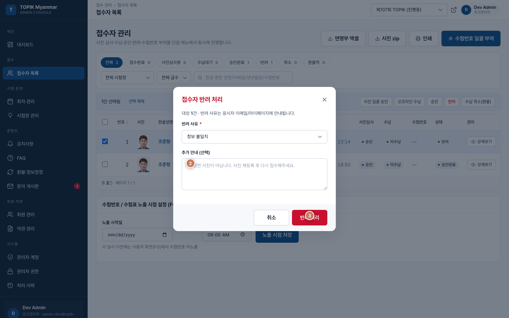
| 번호 | 요소 | 설명 |
|---|---|---|
| 1 | 반려 사유 | 목록에서 선택(기타는 상세 입력). 응시자가 마이페이지에서 볼 수 있으니 명확하게 작성하세요. |
| 2 | 추가 안내 | 응시자에게 전달될 보충 설명(재접수 방법 등). |
| 3 | 반려 실행 | 확인 후 반려 처리 + 응시자 안내. |
4-4. 수험번호 일괄 부여
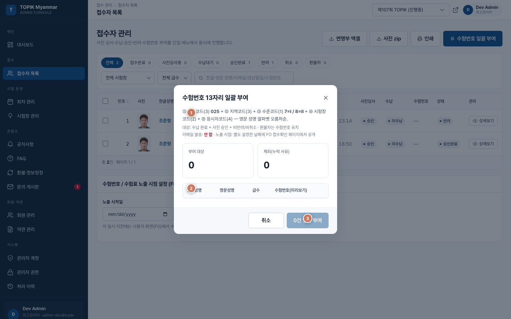
| 번호 | 요소 | 설명 |
|---|---|---|
| 1 | 부여 요약 | 부여 대상 건수와 조건 안내. 조건 미충족 건은 목록에서 제외됩니다. |
| 2 | 미리보기 표 | 실제 부여될 13자리 수험번호를 미리 보여 줍니다. 저장 전 번호·순서를 꼭 확인하세요. |
| 3 | 부여 확정 | 확인 후 실제 부여. 최고관리자만 실행할 수 있습니다. |
13자리 구성: 국가(025) + 지역(3) + 수준(Ⅰ=7, Ⅱ=8) + 시험장(2) + 응시자(4). 예: 0250017010001 → 미얀마(025) · 양곤(001) · TOPIK Ⅰ(7) · 시험장 01 · 0001번 응시자
부여 대상: 수납 완료 + 사진 승인 + 미반려·미취소 + 아직 수험번호 없음 정렬: 시험장·급수별, 영문 이름 가나다/알파벳 순 노출: 「노출 시점」 일시 이전에는 응시자 접수 확인(마이페이지) 화면에 수험번호가 표시되지 않습니다.
4-5. 노출 시점·내보내기·주의사항
- 노출 시점: 목록 아래 카드에서 날짜·시각 설정 → 노출 시점 저장. 공지한 시각 이후 응시자가 마이페이지에서 수험번호를 볼 수 있습니다. 시험 직전에 한꺼번에 공개할 때 사용합니다.
- 연명부 엑셀: 현재 필터 결과 또는 회차 전체. 지역·시험장·급수별 파일로 나뉩니다. 이름·생년월일·성별·국적·언어·직업·동기·목적·수험번호 등 10개 항목.
- 사진 ZIP:
지역/시험장/급수/수험번호.jpg폴더 구조. 사진이 없는 건은 누락 리포트에 기록됩니다. - 동시 작업: 다른 관리자가 먼저 처리한 건은 「다른 관리자가 먼저 수정했습니다」 안내 후 화면이 갱신됩니다. 최신 목록을 확인한 뒤 다시 시도하세요.
- 사진 승인 전 수납 불가. 수납·사진 승인 전 승인 불가(상세·일괄·승인 확인 창 모두 동일). 응시자가 접수 취소한 건은 처리 버튼이 비활성입니다.
- 접수자 상세 · 처리 이력: 해당 접수 ID에 대한 승인·반려·수납·사진 심사 등만 타임라인으로 표시합니다. 이력이 없으면 처리 이력 (0) 으로 보이며, 왼쪽 메뉴 처리 이력(전체 감사 로그)과 혼동하지 마세요.
- 접수자 목록 배지: 왼쪽 메뉴 숫자는 현재 회차의 미수납 건수입니다. 접수완료·사진심사중 등 다른 상태는 배지에 포함되지 않습니다.
- 조회 전용 계정은 처리·내보내기 버튼이 모두 비활성입니다. 일반관리자는 수험번호 부여·연명부·사진 ZIP 내보내기를 할 수 없습니다.
회차 관리

시험 회차(제N회)를 등록·수정·폐지하는 화면입니다. 접수 기간·시험일·응시료·배정 시험장을 여기서 설정합니다.
| 번호 | 요소 | 설명 |
|---|---|---|
| 1 | 회차 목록 | 회차번호·회차명·접수기간·시험일·합격 발표일·정원·접수자 수·응시료·시험장 수·상태·관리 버튼. |
| 2 | 상태 표시 | 예정·접수중·마감·폐지 — 접수 시작·마감 일시 기준으로 자동 전환됩니다(수동으로 「접수중」 버튼을 누르는 방식이 아님). |
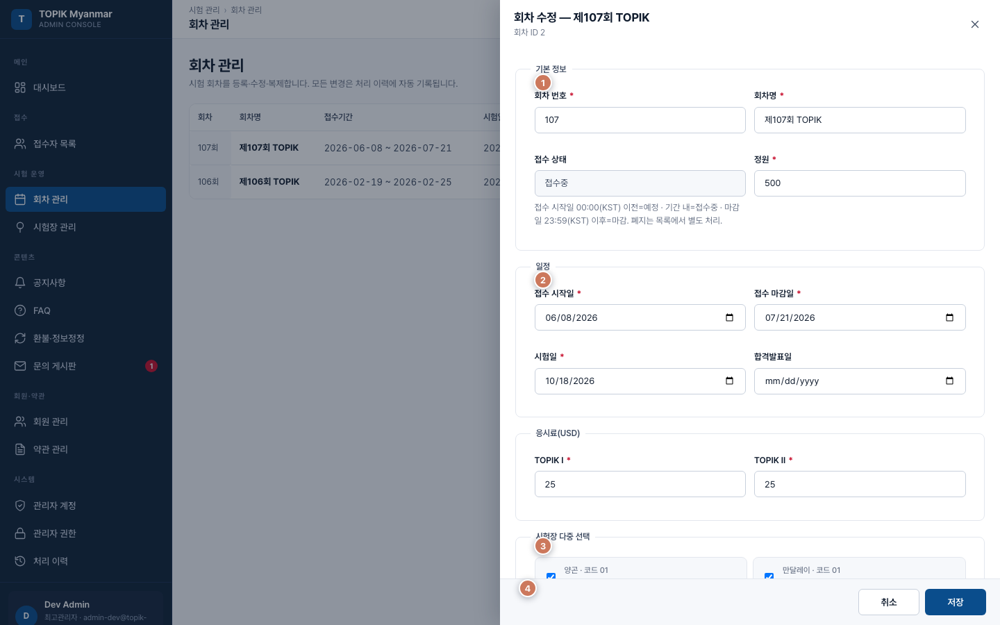
| 번호 | 요소 | 설명 |
|---|---|---|
| 1 | 기본 정보 | 회차번호·회차명·정원 등. 회차명은 응시자 화면에도 표시됩니다. |
| 2 | 일정 | 접수 시작·마감·시험일·합격 발표일. 접수시작 < 마감 < 시험일 순서를 지켜야 저장됩니다. |
| 3 | 응시료·시험장 | TOPIK Ⅰ·Ⅱ USD 금액, 이 회차에 열릴 시험장 다중 선택. |
| 4 | 저장/취소 | 입력 검증 통과 시 저장. 취소 시 변경 내용은 반영되지 않습니다. |
저장 전 확인: 회차명·일정 필수, 응시료 > 0, 시험장 1개 이상. 폐지: 확인 후 회차가 비공개됩니다(기존 접수자 데이터는 유지). 복제 기능으로 이전 회차 설정을 다음 회차에 복사할 수 있어, 매회 비슷한 설정을 다시 입력하는 수고를 줄일 수 있습니다.
TIP: 접수 시작 전에 시험장 관리에서 활성 시험장·정원을 먼저 맞춰 두고, 회차 등록 시 시험장을 배정하세요.
시험장 관리

시험 장소(도시·건물)와 정원, 시험장 코드를 관리합니다. 시험장 코드는 수험번호 13자리에 들어가므로, 등록 후 임의 변경은 피하세요.
| 번호 | 요소 | 설명 |
|---|---|---|
| 1 | 시험장 목록 | 코드·지역·한/영/미얀마어 명칭·주소·정원·상태·비고. |
| 2 | 활성/비활성 | 비활성 시험장은 회차 배정·접수자 필터 목록에서 제외됩니다. 폐쇄·미사용 장소는 비활성 처리하세요. |
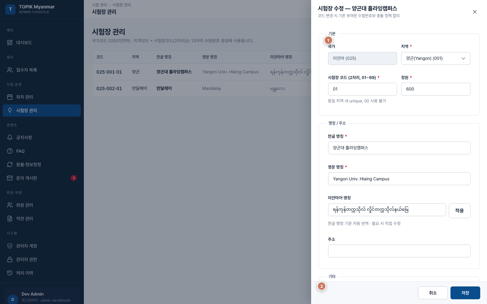
| 번호 | 요소 | 설명 |
|---|---|---|
| 1 | 입력 항목 | 지역·시험장 코드(2자리)·정원·한/영/미얀마어 명칭·주소·비고. |
| 2 | 저장/취소 | 한글·영문 명칭·정원 > 0 필수. 같은 지역 안에서 코드 중복 불가. |
비고란: 좌석 배치도 URL, 현장 책임자, 연락처 등 운영에 필요한 메모를 자유롭게 적어 두면 현장 운영 시 도움이 됩니다.
공지사항

응시자 공지사항 게시판 글을 작성·수정·삭제합니다. 접수 일정·시험 유의사항·결과 안내 등 중요 공지는 상단 고정과 중요 카테고리를 활용하세요.
| 번호 | 요소 | 설명 |
|---|---|---|
| 1 | 탭·카테고리 | 목록 / 휴지통 + 중요·접수·시험·결과 필터 + 검색. |
| 2 | 공지 목록 | 상단 고정 글이 먼저, 그다음 작성일 최신순. |
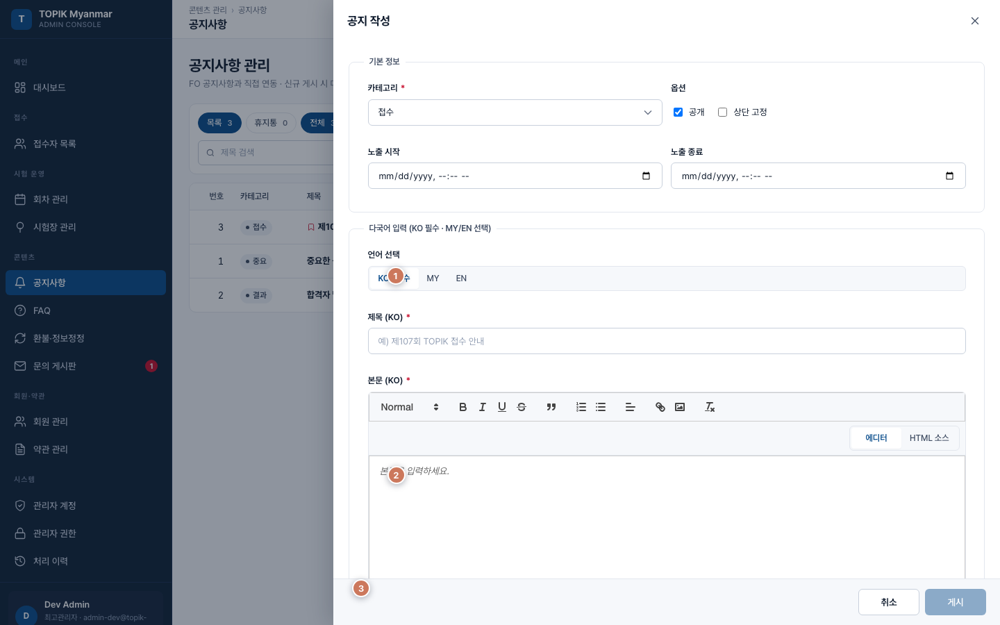
| 번호 | 요소 | 설명 |
|---|---|---|
| 1 | 언어 탭 | KO / MY / EN — 제목·본문을 언어별로 입력. 한국어는 필수, 미얀마어·영어는 선택(미입력 시 해당 언어 사용자에게 한국어가 보일 수 있음). |
| 2 | 본문 편집 | 글꼴·목록·링크·이미지 등 리치 텍스트 + 첨부 파일. |
| 3 | 저장/게시 | 공개 여부·상단 고정·노출 기간 설정 후 저장. |
첨부: 최대 5개, 파일당 10MB. 마케팅 발송: 새로 공개하는 공지를 등록하면, 마케팅 수신에 동의한 회원에게 제목 + 링크 이메일이 발송됩니다(본문 전체가 아님). 삭제: 휴지통에 30일 보관 후 영구 삭제. 그 전에는 복구 가능.
TIP: 다국어 공지는 한국어 초안을 먼저 작성한 뒤 MY·EN 탭으로 옮기면 실수를 줄일 수 있습니다.
FAQ

응시자 자주 묻는 질문을 등록·수정합니다. 문의 게시판 부담을 줄이려면 접수·수납·수험표 등 반복 질문을 FAQ에 먼저 올려 두세요.
| 번호 | 요소 | 설명 |
|---|---|---|
| 1 | 카테고리·검색 | 접수 / 시험 / 결과 / 기타 + 질문 키워드 검색. |
| 2 | FAQ 목록 | 카테고리·노출 순서(작을수록 위) 기준 정렬. |
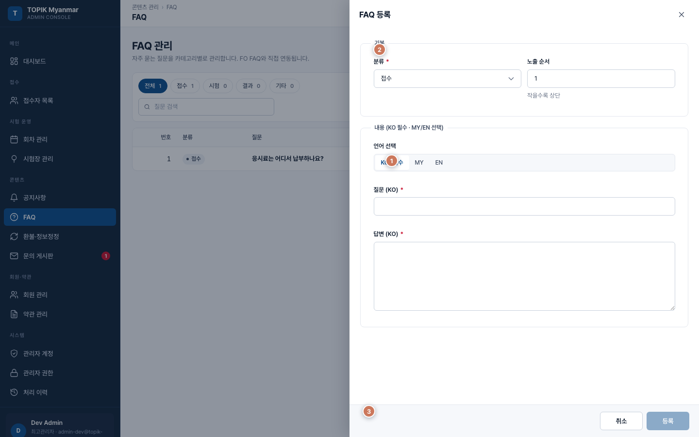
| 번호 | 요소 | 설명 |
|---|---|---|
| 1 | 언어 탭 | KO/MY/EN 질문(120자)·답변(3000자). 한국어 필수. |
| 2 | 분류·순서 | 카테고리·노출 순서. 자주 묻는 항목은 순서 번호를 작게(예: 1, 2, 3). |
| 3 | 저장/삭제 | 저장 또는 삭제(확인 후). |
환불·정보정정

응시자가 환불·정보정정 게시판에 올린 신청을 처리합니다. 모든 글이 비밀글이며, 관리자가 상세를 열면 열람 이력이 자동 기록됩니다(감사·분쟁 대비).
| 번호 | 요소 | 설명 |
|---|---|---|
| 1 | 신청 목록 | 유형(환불/정보정정)·상태·검색 필터. 제목을 클릭하면 상세 슬라이드 패널이 열립니다. |
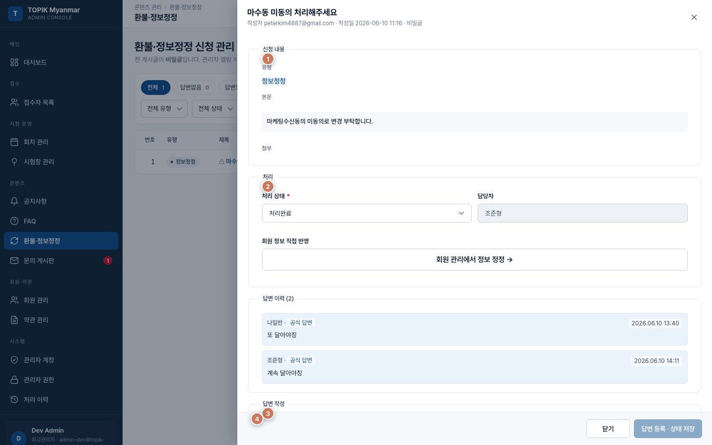
| 번호 | 요소 | 설명 |
|---|---|---|
| 1 | 신청 내용 | 유형·본문·첨부(영수증·신분증 사본 등). |
| 2 | 처리 상태 | 접수 / 검토중 / 처리완료 / 반려 + 담당자. 상태를 단계별로 바꿔 응시자가 진행 상황을 알 수 있게 합니다. |
| 3 | 답변·댓글 | 공식 답변 이력(누적) + 댓글·대댓글. |
| 4 | 답변 등록·저장 | 상태 변경 + 답변 작성 → 답변 등록·상태 저장. 답변 없이 상태만 바꿀 수 없습니다. |
환불 유형: 환불 금액·방법 입력란이 추가로 표시됩니다. 응시료 규정의 환불률 표와 맞춰 처리하세요. 정보정정: 회원 관리 화면으로 바로가기 링크가 있어, 승인 후 회원 정보를 수정할 수 있습니다.
TIP: 「검토중」으로 바꾼 뒤 내부 확인이 끝나면 「처리완료」+ 답변으로 마무리하면 응시자 혼란이 줄어듭니다.
문의 게시판

응시자 1:1 문의를 확인·답변합니다. 비밀글은 작성자와 관리자만 본문을 볼 수 있습니다.
| 번호 | 요소 | 설명 |
|---|---|---|
| 1 | 문의 목록 | 전체 / 일반 / 비밀 탭 + 카테고리·상태·검색. 제목을 클릭하면 상세 슬라이드 패널이 열립니다. |
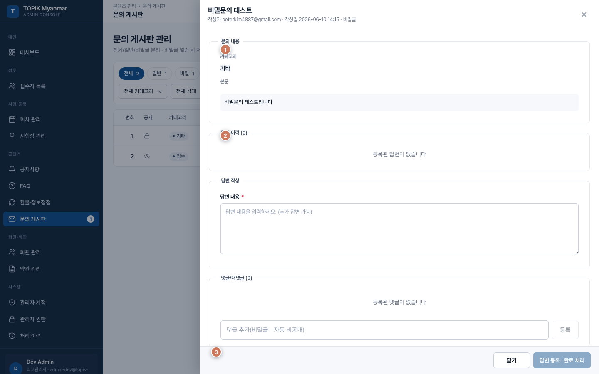
| 번호 | 요소 | 설명 |
|---|---|---|
| 1 | 문의 내용 | 제목·본문·첨부·비밀글 여부. |
| 2 | 답변·댓글 | 공식 답변 이력 + 댓글. 일반글 댓글은 공개 여부 선택, 비밀글 댓글은 자동 비공개. |
| 3 | 답변 등록·완료 | 답변 등록·완료 처리 → 상태를 답변완료로 바꿀 수 있습니다. |
TIP: FAQ에 이미 있는 내용이면 답변에 FAQ 링크를 안내하고, 필요 시 FAQ 문구를 보강하세요.
회원 관리

가입 회원 조회·정지·탈퇴·비밀번호 초기화. 접수자 목록과 달리 회원 계정 단위로 관리합니다.
| 번호 | 요소 | 설명 |
|---|---|---|
| 1 | 회원 목록 | 상태·국적·검색 필터. 이름·이메일·가입유형(이메일/Google)·상태·관리 버튼. |
| 2 | 검색 | 이름·이메일·연락처로 검색. |
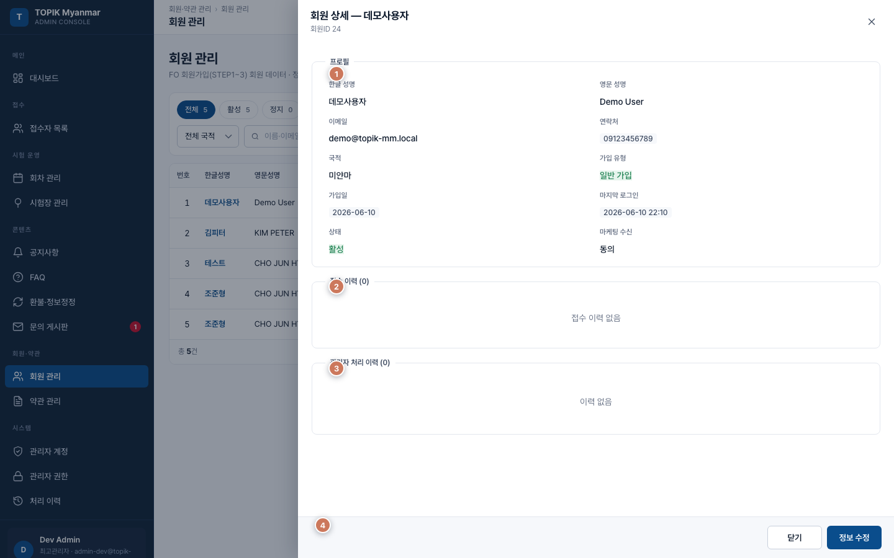
| 번호 | 요소 | 설명 |
|---|---|---|
| 1 | 프로필 | 가입 정보·연락처·마케팅 수신 동의 등. |
| 2 | 접수 이력 | 이 회원의 모든 접수 건 목록. |
| 3 | 처리 이력 | 이 회원과 관련된 관리자 처리 타임라인. |
| 4 | 관리 버튼 | 정보 수정·정지·해제·탈퇴·비밀번호 초기화. |
정지: 사유 필수. 정지 시 로그인 중인 세션이 무효화됩니다. 탈퇴: 「진행 중 접수가 모두 취소됩니다」 경고 후 처리. 복구 불가. 비밀번호 초기화: 임시 비밀번호를 한 번만 화면에 표시하고 이메일로도 보냅니다. Google 가입 회원은 이 기능을 사용할 수 없습니다(Google에서 비밀번호 관리).
약관 관리

이용약관·개인정보처리방침·마케팅 수신 약관의 버전을 관리합니다. 게시 시 응시자·회원 가입·동의 화면에 반영됩니다.
| 번호 | 요소 | 설명 |
|---|---|---|
| 1 | 약관 종류·목록 | 이용약관 / 개인정보 / 마케팅. 버전·게시일·상태(초안 / 게시 / 폐지). |
| 2 | 버전 목록 | 게시일 최신순. 게시 중 버전이 현재 유효본입니다. |
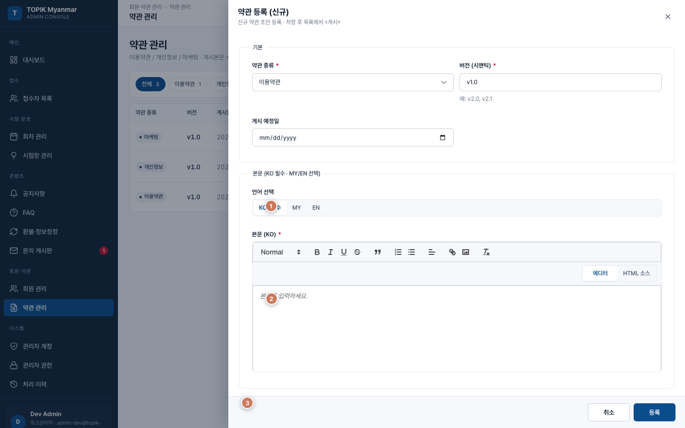
| 번호 | 요소 | 설명 |
|---|---|---|
| 1 | 언어 탭 | KO/MY/EN 본문. 한국어 필수. |
| 2 | 본문 편집 | 약관 전문 입력. |
| 3 | 저장/게시/폐지 | 초안 저장 → 검토 후 게시(최고관리자). 같은 종류의 기존 게시본은 자동 폐지. 이미 게시된 버전은 내용 수정 대신 신규 버전을 만들어야 합니다. |
동의 이력: 회원·약관별 동의 시각 조회 및 CSV 내보내기(감사·분쟁 대비 자료).
관리자 계정

관리자 계정 등록·수정·비활성화. 최고관리자만 이 메뉴를 사용할 수 있습니다.
| 번호 | 요소 | 설명 |
|---|---|---|
| 1 | 관리자 목록 | 아이디·이름·이메일·권한 등급·마지막 로그인·상태·관리. |
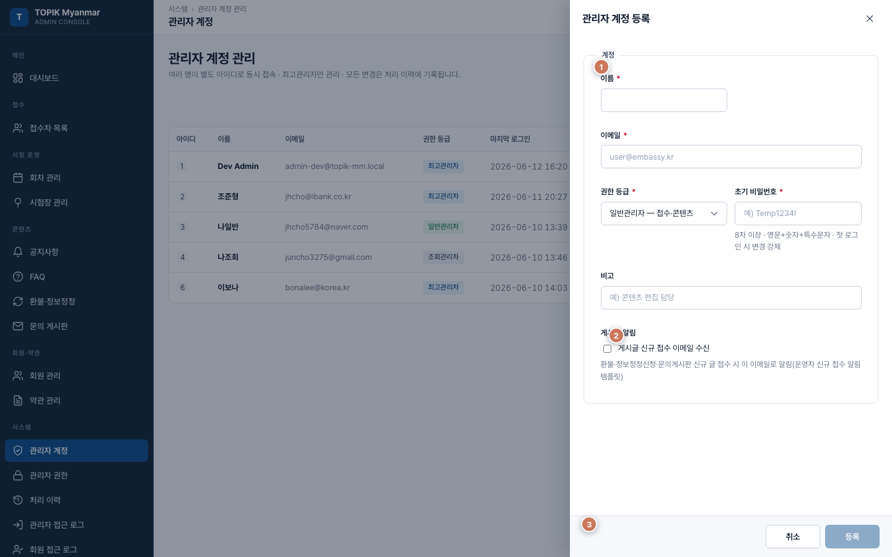
| 번호 | 요소 | 설명 |
|---|---|---|
| 1 | 입력 항목 | 이름·이메일·권한 등급(최고/일반/조회)·초기 비밀번호·비고. |
| 2 | 저장/취소 | 저장 후 해당 관리자는 첫 로그인 시 비밀번호 변경이 강제됩니다. |
비밀번호 초기화: 임시 비밀번호 발급(약 5초간 화면 표시) + 이메일 발송. 본인 계정은 비활성화할 수 없습니다.
TIP: 현장 담당자에게는 일반관리자, 통계·감사만 필요한 분에게는 조회관리자를 부여하는 것을 권장합니다.
관리자 권한

메뉴별 조회·등록·수정·삭제·사진심사·수납·승인·반려·수험번호·내보내기 권한을 표로 참고할 수 있습니다. 실제 화면에서 버튼이 보이는지는 로그인한 계정 등급이 기준입니다.
| 번호 | 요소 | 설명 |
|---|---|---|
| 1 | 권한 표 | 메뉴(행) × 권한 종류(열). O/X 또는 등급별 표시. 교육·점검용 참고 자료입니다. |
역할별 요약
| 메뉴 | 최고관리자 | 일반관리자 | 조회 |
|---|---|---|---|
| 접수자 | 전체(수험번호·내보내기 포함) | 사진·수납·승인·반려 | 조회만 |
| 회차·시험장 | 전체 | 조회 | 조회 |
| 공지·FAQ | 전체 | 등록·수정·삭제 | 조회 |
| 환불·문의 | 전체 | 조회·답변 | 조회 |
| 회원·약관 | 전체 | 조회 | 조회 |
| 관리자·권한 | 전체 | 메뉴 없음 | 메뉴 없음 |
| 처리 이력 | 전체 | 본인 처리만 | 본인 처리만 |
| 접근 로그·권한 이력 | 전체 | 메뉴 없음 | 메뉴 없음 |
권한 표는 CSV 내보내기로 저장할 수 있습니다.
처리 이력

관리자가 한 승인·반려·수납·수정 등의 기록을 조회합니다. 분쟁·감사 시 「누가·언제·무엇을」 했는지 확인하는 화면입니다.
| 번호 | 요소 | 설명 |
|---|---|---|
| 1 | 이력 목록 | 기간·처리자·유형·액션 필터. 시각·처리자·대상·내용 요약. |
| 2 | 검색 | 대상 ID·키워드 등으로 검색. |
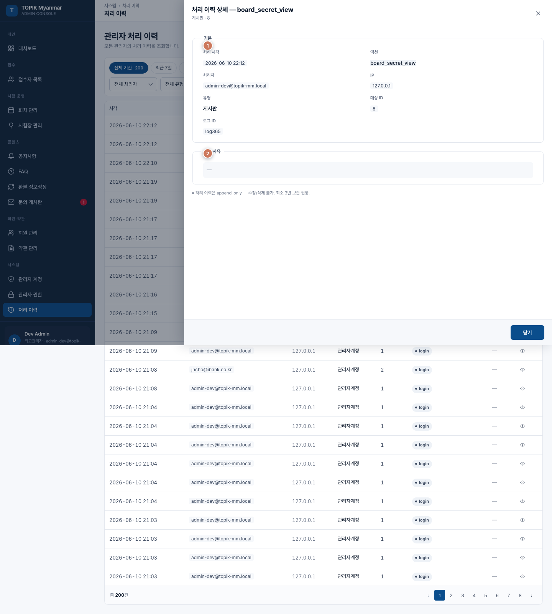
| 번호 | 요소 | 설명 |
|---|---|---|
| 1 | 처리 정보 | 처리 시각·담당자·유형·대상(접수자·회원 등). |
| 2 | 변경 내용 | 변경 전/후 값, 관련 화면으로 이동하는 링크(있는 경우). |
조회 범위: 최고관리자 = 전체 이력, 일반/조회 = 본인이 처리한 이력만. 접수자 상세와의 차이: 이 메뉴는 시스템 전체 처리 이력입니다. 접수자 목록 → 상세보기 → 처리 이력 탭은 해당 접수 건 한 건에 대한 이력만 보여 줍니다. CSV 내보내기: 최고관리자만. 필터 적용 결과를 파일로 저장. 보관: 이력은 수정·삭제 불가. 최소 3년 보관을 권장합니다.